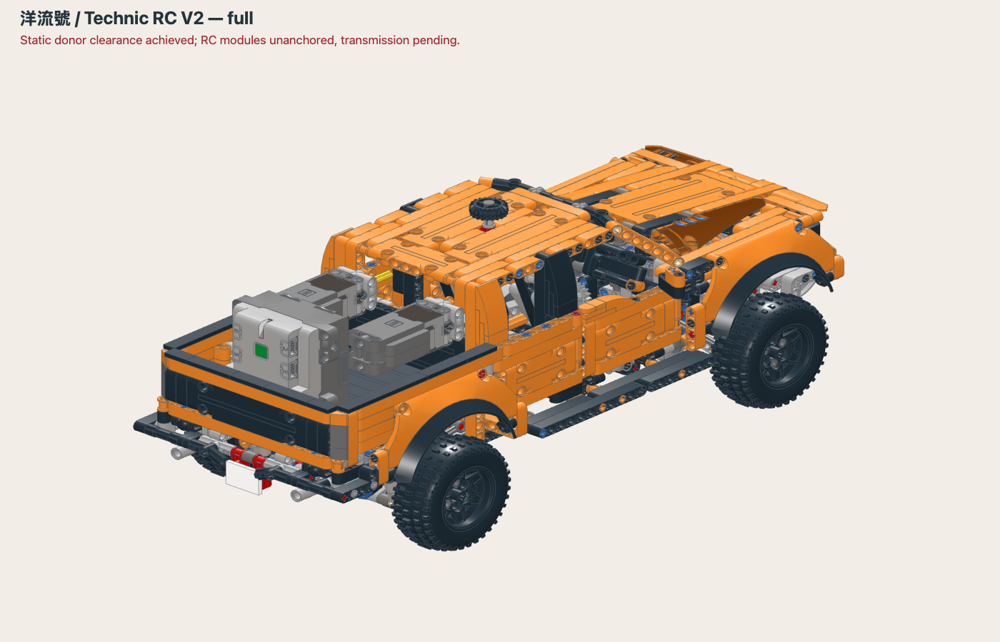
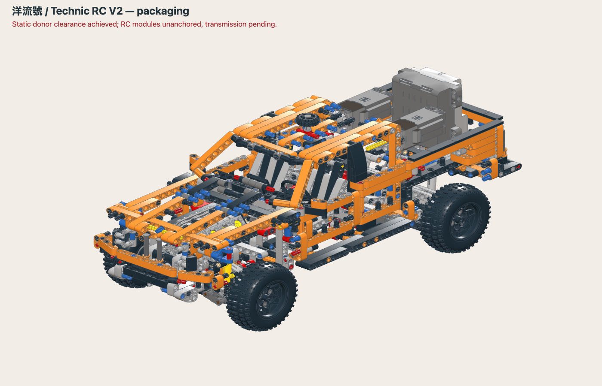
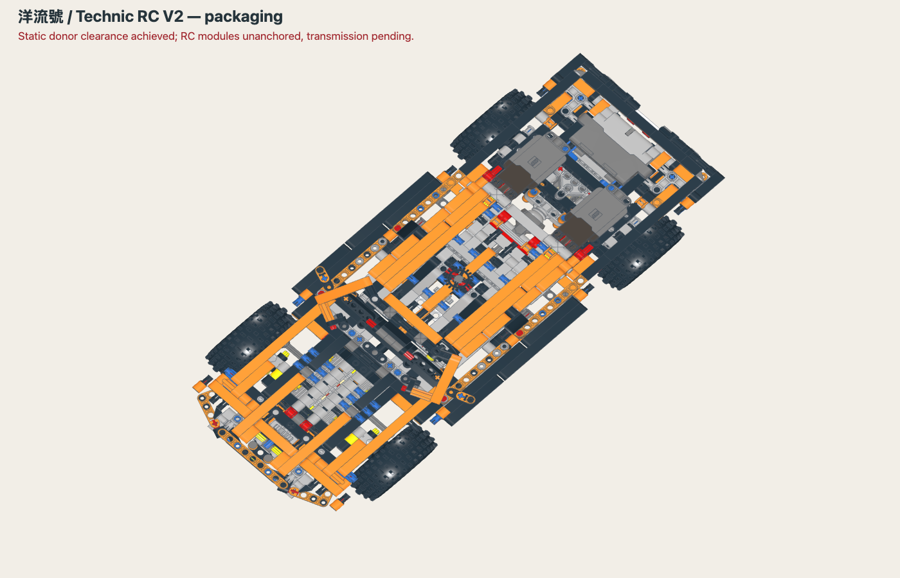
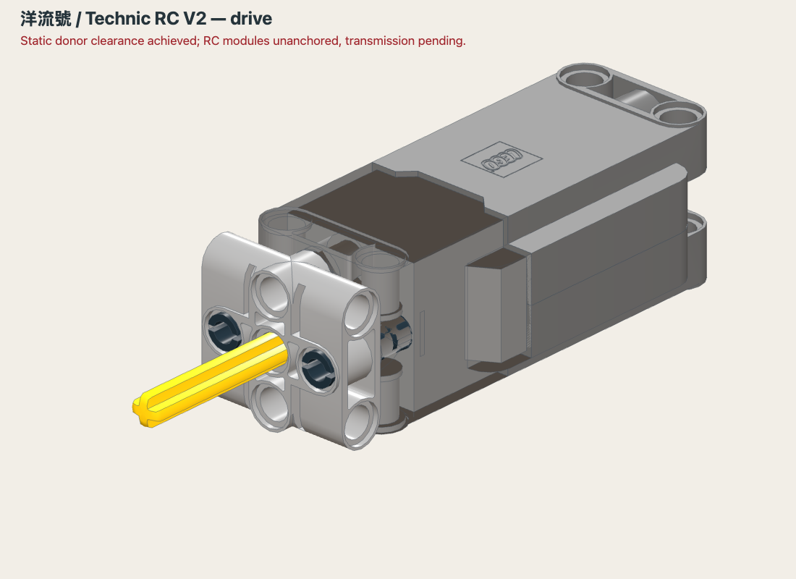
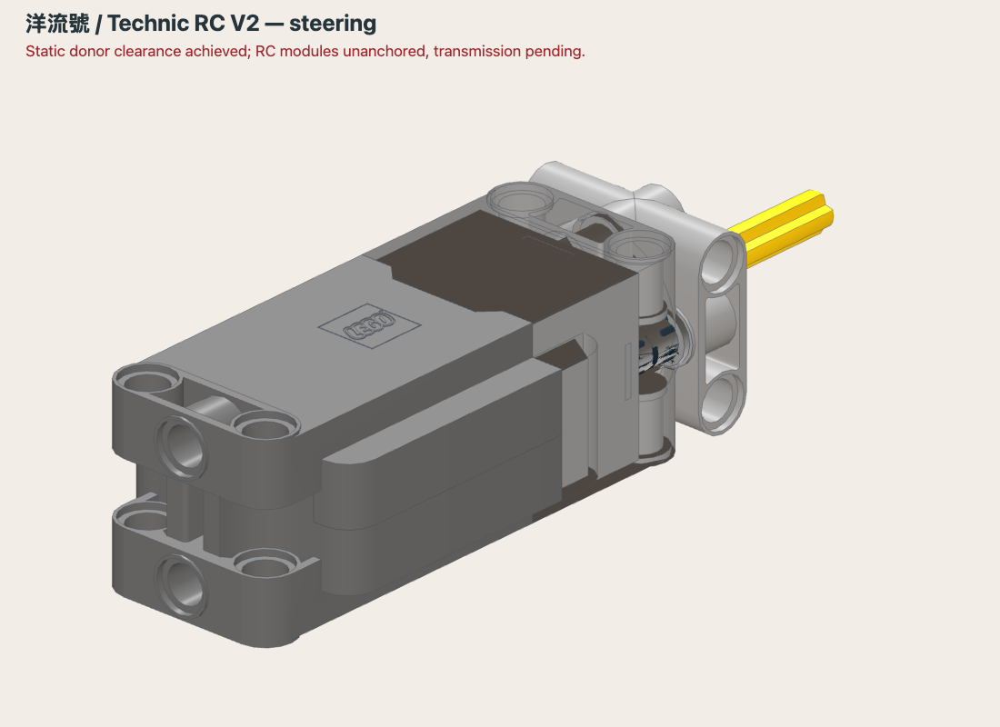
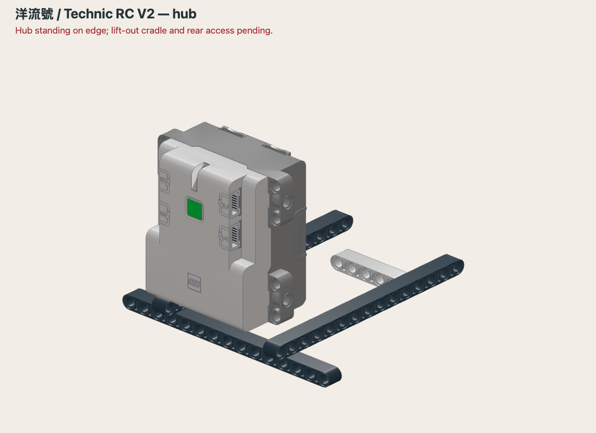
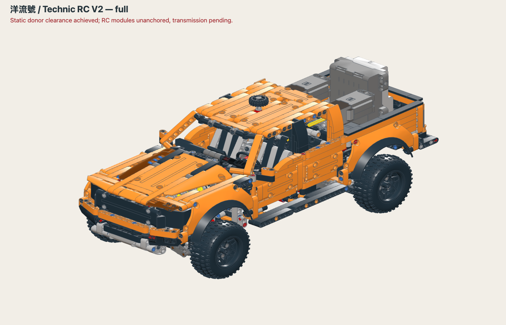
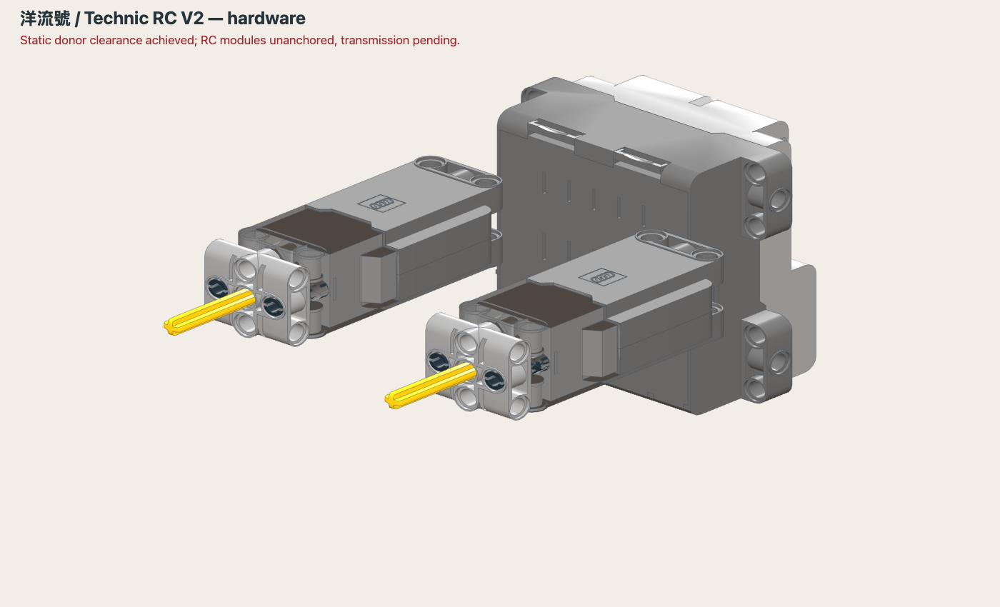

Engineering review · V2
洋流號 / Technic
A first look at fitting two L motors and a Technic Hub into our 42126 reference.
Hardware fit study. The motors and hub are not anchored to the truck, and neither motor connects to the drivetrain or steering.
The current model is a 42126 upstream reference. The Dark Orange 洋流號 campaign body, removable platform and accessories have not been built in this edition.

Hardware in the upstream bodyTwo motors above the bed, with the hub behind them. None is anchored to the chassis.Static fit checked15,268 addition/upstream comparisons found no overlapping catalog-mesh bounding boxes.
Mounts and gears nextMotor retention, chassis anchors, independent drive/steering transmissions and cable access remain open.
Review previewNo build instructions or parts order is offered for this unfinished edition.
The 3D assembly remains a local engineering preview while the upstream CAD reuse terms are clarified. This public page contains inspected renders and the progress report.

Structural cutawayOrange structural beams and the original suspension and steering supports remain.
Top viewStatic upstream clearance is checked. Cables and moving clearances are not modeled.
Drive motor flangeActual catalog motor, compact flange, pins and axle. Rear restraint and transmission are pending.
Steering motor flangeA separate steering subassembly. It does not yet connect to the rack.
Hub orientationThe hub needs a lift-out carrier, cable space and access with the tailgate/platform open.
Front viewThe 42126 upstream remains unchanged. The Dark Orange campaign body and platform are next.
RC study additionsEleven catalog occurrences are added for this fit study. This is not a shopping list.